Reporting for multiple VAT registrations
Important
Some or all of the functionality noted in this topic is available as part of a preview release. The content and the functionality are subject to change. For more information about preview releases, see Service update availability.
This topic explains how to do reporting for multiple value-added tax (VAT) registrations.
Prerequisites
Before you can do the reporting for multiple VAT registrations, the following prerequisites must be completed:
- Enable the Tax Calculation service.
- Configure the Tax Calculation service.
- Enable additional tax ID features.
- Set up the Multiple VAT registrations feature.
Enable the Tax Calculation service
Go to Tax > Setup > Tax configuration** > Tax service setup (Preview).
On the General tab, set the Enable tax service option to Yes.
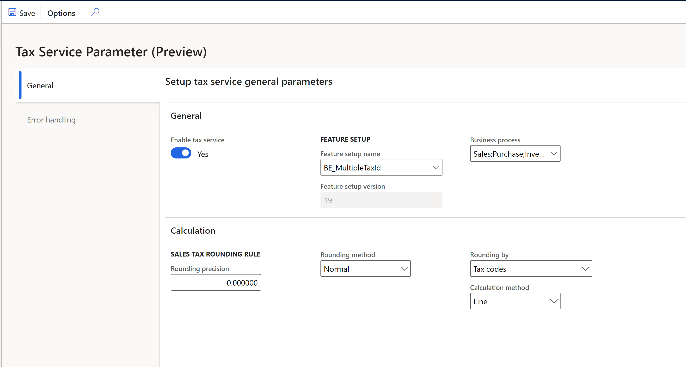
Configure the Tax Calculation service
For information about how to configure the Tax Calculation service, see Tax Calculation.
Enable features in the feature management
Go to Workspaces > Feature management.
In the feature list, select and enable the following features:
- Support multiple VAT registration numbers
- EU sales list transfer based on tax transactions only
Note
If you transfer between warehouses in different countries that have a tax registration, you must also enable the Tax in transfer order feature and configure the Tax Calculation service for tax in transfer orders. For more information, see Tax feature support for transfer orders.
Set up the Multiple VAT registrations feature
For information about how to set up the Multiple VAT registrations feature, see Multiple VAT registration numbers.
Enable features
In the Feature management workspace, enable the following features:
- Intrastat reporting by Multiple Tax ID
- EU Sales list reporting by Multiple Tax ID
- Sales tax declaration by Multiple Tax ID
Set up intra-community reporting for multiple VAT registrations
Set up country/region properties
Go to Tax > Set up > Foreign trade > Foreign trade parameters.
On the Country/region properties tab, set up the following country types: EU, EFTA, or Third country/region.
The following information applies to documents about movements of goods between European Union (EU) countries, except movements within the same country (for example from Belgium to Belgium):
- By default, the list code is EU trade, and it's transferred to the EU sales list.
- Documents are transferred to Intrastat.
Set up Intrastat
Set up Intrastat parameters
All tax registrations have the same settings for Intrastat parameters.
Go to Tax > Set up > Foreign trade > Foreign trade parameters.
On the Intrastat tab, set up the parameters on the following FastTabs:
- Default transaction codes
- Minimum limit
- Transfer
- Check setup
- Rounding rules
- Commodity code hierarchy
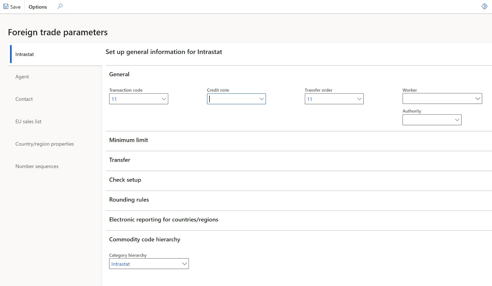
For more information about how to configure Intrastat, see Intrastat overview.
Set up Intrastat reporting formats
Go to Tax > Set up > Foreign trade > Foreign trade parameters.
On the Intrastat tab, on the Electronic reporting for countries/regions FastTab, select the Intrastat reporting format for each country of your tax registration.
In the File format mapping field, select the Electronic reporting (ER) format for intrastat file export, for example, select Intrastat (NL) for Netherlands.
In the Report format mapping field, select the ER format for printable report layout, for example, select Intrastat report.
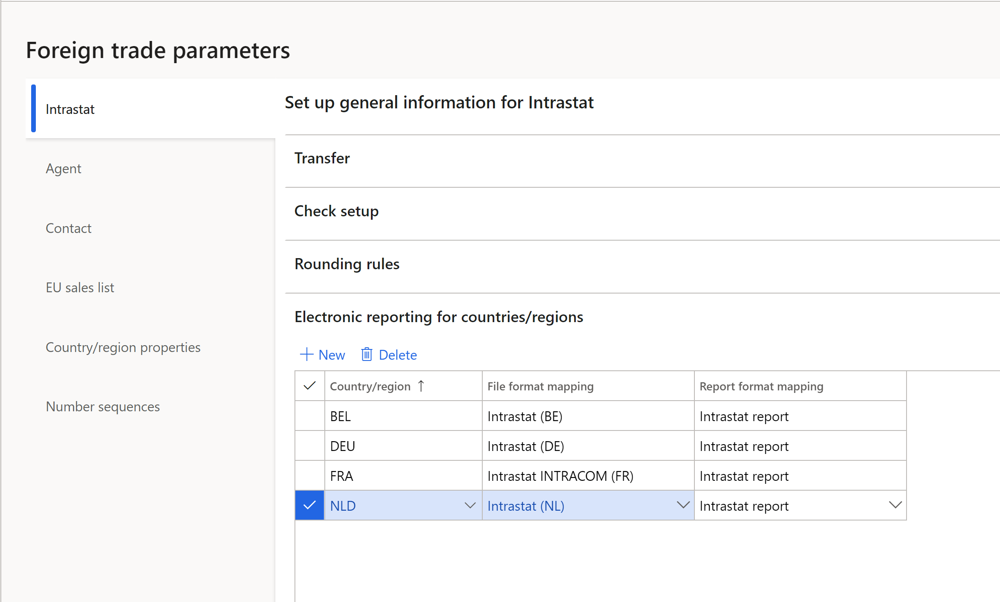
Note
You can select an ER format if the ISO Country/region codes field on the ISO Country/region codes FastTab is blank in this format.
The following table shows the earliest ER format versions that you can select the format for.
Release Country ER format 10.0.19 All Intrastat model.version.16 10.0.19 NL Intrastat (NL).version.1.3 10.0.20 FR Intrastat INTRACOM (FR).version.13.5
Intrastat SAISUNIC (FR).version.1.310.0.20 UK (NI) Intrastat (UK).version.1.2
For more information, see Download ER configurations from the Global repository of Configuration service.
Set up transaction codes
A system of two-digit transaction codes is used to differentiate types of trade at the European level. For more information, see European business statistics compilers' manual for international trade in goods statistics — 2021 edition - Products Manuals and Guidelines - Eurostat (europa.eu).
Most countries use two-digit transaction codes. However, in some countries, such as the United Kingdom, the second digit in country-specific guidelines might differ from EU guidelines. In this case, configure country-specific transaction codes, and then manually select them in documents.
Some countries, such as Belgium, Italy, and Austria, use a one-digit transaction code. In this case, you can configure two-digit transaction codes according to European guidelines. Then, if the country-specific Intrastat format should have only one digit, only the first digit will be exported to it. Alternatively, you can configure one-digit transaction code and select it manually in the documents.
Before you configure settings and start to use the Intrastat feature, analyze country transaction codes, and decide how to set up the transaction codes for countries.
Go to Tax > Set up > Foreign trade > Transaction codes.
Create the required transaction codes.
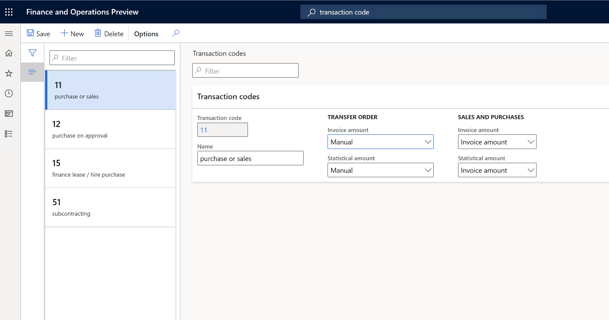
For each transaction code that you create, you must set up the rules that are used to calculate invoice amounts and statistical amounts for transfer orders, and for sales orders and purchase orders.
For transfer orders, set up one of the following rules:
Empty: The amount will be 0 (zero).
Financial cost amount: The amount will equal the financial cost.
Total cost: The amount will equal the total cost of the transaction.
Manual: The amount will equal the amount that is specified in the Invoiced amount and Statistical value fields on the transfer order line. These values are taken from the Amount field on the transfer order line.
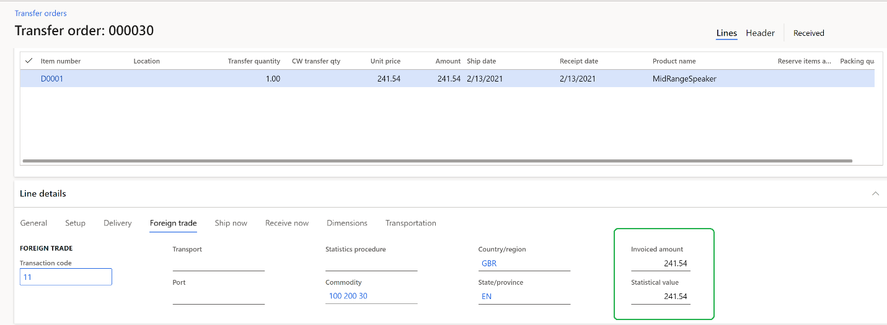
For sales orders and purchase orders, set up one of the following rules:
- Empty: The amount will be 0 (zero).
- Invoice amount: The amount will equal the amount that is invoiced for the commodity.
- Base amount: The amount will equal the invoice amount that would be invoiced before any discount is applied.
Set up Intrastat compression rules
All tax registrations have the same setup for compression rules.
Go to Tax > Setup > Foreign trade > Compression of Intrastat.
Select the values to use in the Compression function. Select all the values that are reported in any of the countries where you have tax registrations. For example, in 2021, the following values should be reported in some countries.
Value Belgium Netherlands Northern Ireland (United Kingdom) France Mandatory elements Direction (Flow) Yes Yes Yes Yes Commodity code Yes Yes Yes Yes Partner Member State Yes Yes Yes Yes Transaction code Yes Yes Yes Yes VAT number of partner (Tax exempt number)
Mandatory on dispatches from 2022 for all EU countriesYes Yes No Yes Optional elements Country of origin
(On dispatch and/or on arrival) Mandatory on dispatches from 2022 for all EU countriesYes Yes No Yes Delivery terms Yes No Yes No Mode of transport Yes No No Yes State of origin, County of origin (Region of origin) Yes No No Yes Statistics procedure No Yes No Yes Additional elements for country purposes Transport document (Invoice, Identification of packing slip or product receipt) No Yes No No
Note
Select all values that must be reported on the Compression of Intrastat page.
Set up the EU sales list
Set up sales tax codes
Go to Tax > Sales tax > Sales tax codes.
Create unique sales tax codes for each of your tax registrations.
On the Report setup FastTab, in the EU sales list section, set the Excluded option to Yes if tax transactions that have a selected sales tax code should not be transferred to the EU sales list.
In the Country/region type section, in the Country/region type field, define the tax transaction type for VAT reporting: EU, Domestic, or Third country.
This setting is mandatory in some countries, such as the United Kingdom.
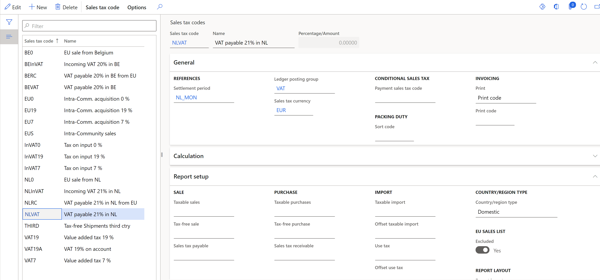
Set up item sales tax groups
- Go to Tax > Sales tax > Item sales tax groups.
- In the Reporting type field, select the reporting type for EU sales list reporting: Item, Service, or Investment (for Belgium).
Set up EU sales list parameters
All tax registrations have the same settings for EU sales list parameters.
- Go to Tax > Setup > Foreign trade > Foreign trade parameters.
- On the EU sales list tab, set up the parameters on the Transfer and Rounding rules FastTabs.
Note
If one of your tax registrations is in Poland or Hungary (countries that report purchases in addition to sales), set the Transfer purchases option to Yes.
Set up EU sales list reporting formats
Go to **Tax > Set up > Foreign trade > Foreign trade parameters.
On the EU sales list tab, on the Electronic reporting for countries/regions FastTab, select EU sales list reporting formats for each country of your tax registration.
In the File format mapping field, select the ER format for EU sales list report electronic format. For example, for Netherlands, select EU Sales list (NL).
In the Report format mapping field, select the ER format for printable report layout. For example, select either EU sales list by rows report, or EU sales list by columns report.
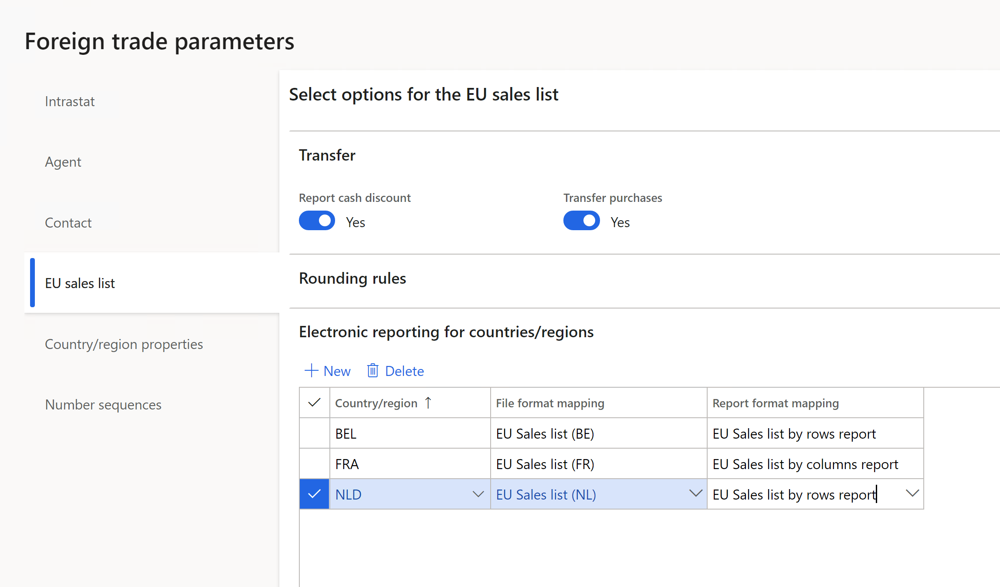
Note
You can select an ER format if the ISO Country/region codes field on the ISO Country/region codes FastTab is blank in this format.
The following table shows the earliest ER format versions that you can select the format for.
Release Country ER format 10.0.19 All EU Sales list model.version.9 10.0.19 NL EU Sales list (NL).version.1.10 10.0.20 FR EU Sales list (FR).version.1.2 10.0.20 UK (NI) EU Sales list XML (UK).version.9.6
EU Sales list TXT (UK).version.9.7
Generate intra-community reporting for multiple VAT registrations
Transfer and report Intrastat
Go to Tax > Declarations > Foreign trade > Intrastat.
Select Transfer.
In the Tax registration number dialog box, select the tax registration number to transfer transactions for, and then select OK.
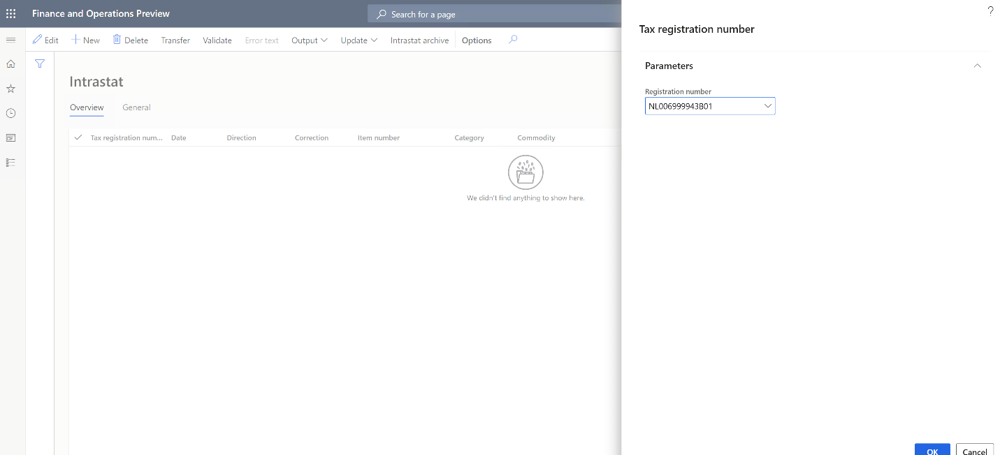
In the Intrastat (Transfer) dialog box, select the documents to transfer: Free text invoice, Customer invoice, Customer packing slips, Vendor invoice, Vendor product receipts, Project invoice, or Transfer order. Then and select OK.
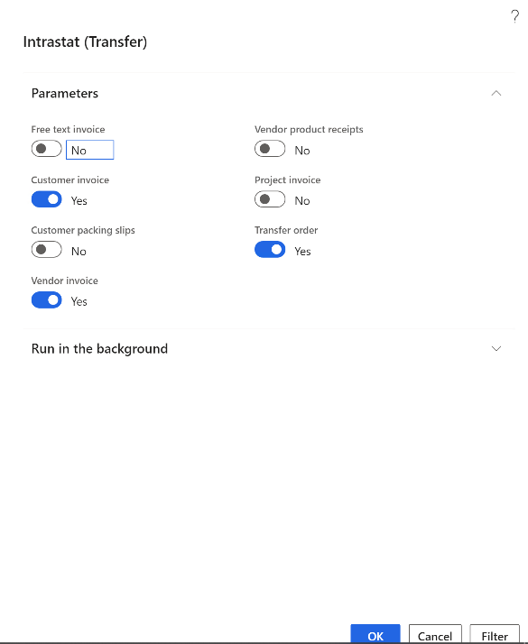
Transactions for the selected tax registration and documents are transferred. Review the transactions, and make any adjustments that are required.
Note
In the 10.0.19, 10.0.20 release, Intrastat Transfer function has country-specific logic that isn't yet covered in the Intrastat transfer for Multiple Tax ID feature for the following countries: Czech Republic, Finland, Germany, Hungary, Italy, Latvia, Lithuania, Poland, and Spain.
Select Output > Report.
In the Tax registration number dialog box, select the tax registration number to generate the Intrastat report for, and then select OK.
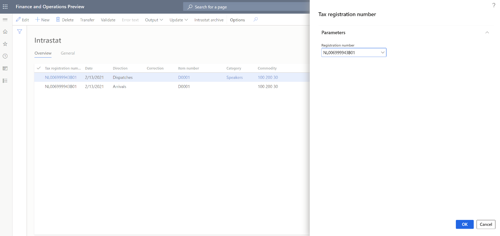
In the Intrastat Report dialog box, in the From date and To date fields, define the period to generate the Intrastat report for.
Set the Generate file option to Yes to generate an electronic reporting file. Then, in the File name field, enter the name of the output electronic file if applicable.
Set the Generate report option to Yes to generate an Excel report. Then, in the Report file name field, enter the name of the output Excel file if applicable.
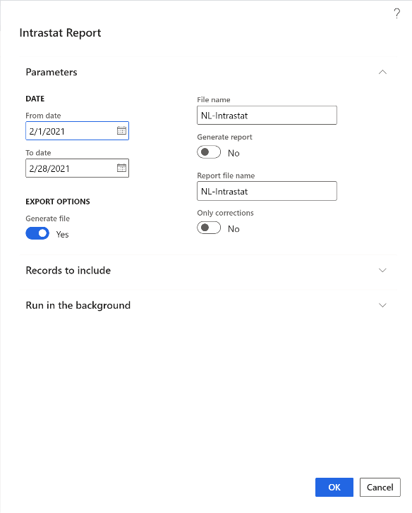
The dialog box also contains country-specific fields that are required in the country-specific Intrastat report. Set these fields as required.
Select OK to generate the report.
Transfer and report the EU sales list
Go to Tax > Declarations > Foreign trade > EU sales list.
Select Transfer.
In the Tax registration number dialog, select the tax registration number to transfer transactions for, and then select OK.
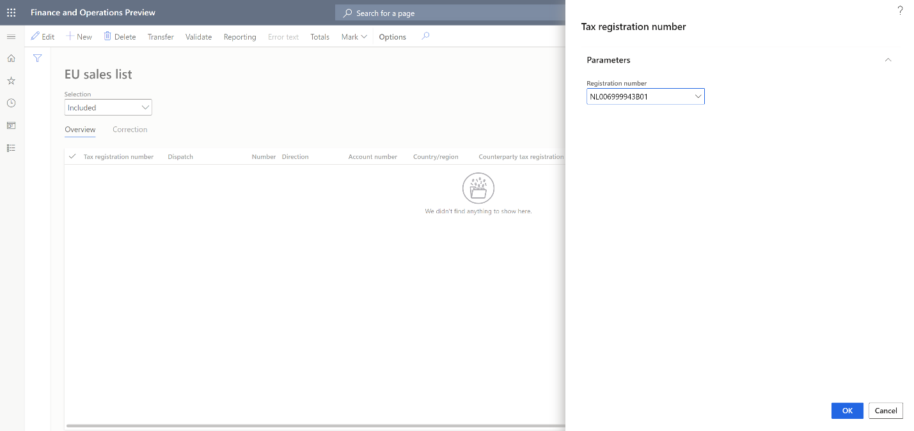
In the Transfer transactions for EU sales list dialog box, select the documents and reporting types to transfer.
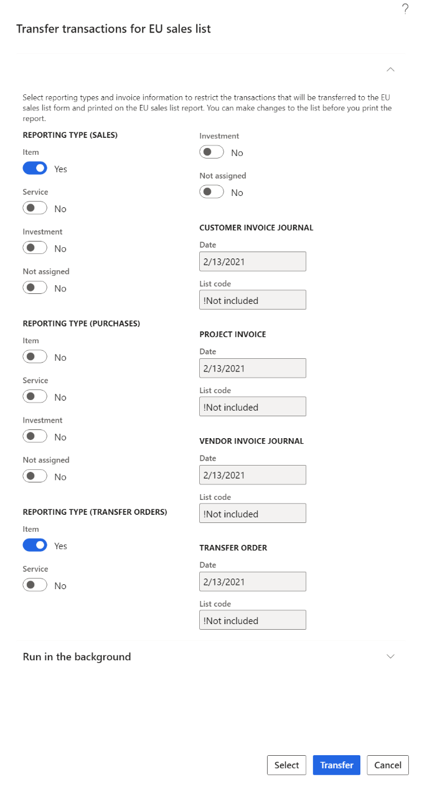
Select Select to adjust the default filter for transactions that should be transferred, and then select Transfer.
Transactions for the selected tax registration, documents, and reporting types are transferred. Review the transactions, and make any adjustments that are required.
Select Reporting.
In the Tax registration number dialog box, select the tax registration number to generate the EU sales list report for, and then select OK.
In the EU reporting dialog box, in the From date field, specify the first date to generate the EU sales list report for.
Set the Generate file option to Yes to generate an electronic reporting file. Then, in the File name field, enter the name of the output electronic file.
Set the Generate report option to Yes to generate an Excel report. Then, in the Report file name field, enter the name of the output Excel file.
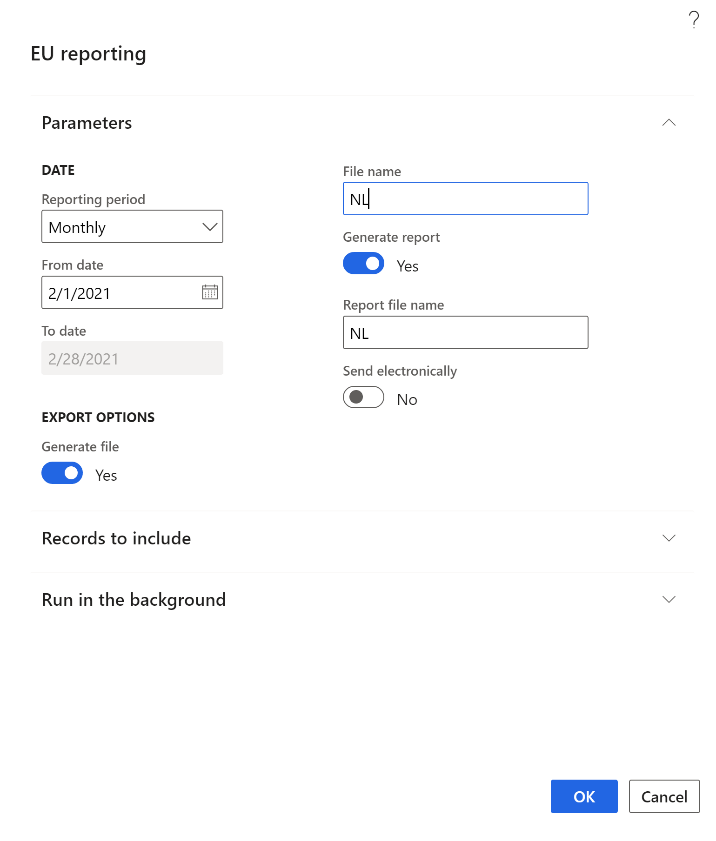
The dialog box also contains country-specific fields that are required in the country-specific EU sales list report. Set these fields as required.
Select OK to generate the report.
Set up VAT reporting for multiple VAT registrations
Go to Tax > Set up > Parameters > General ledger parameters.
On the Sales tax tab, on the Electronic reporting for countries/regions FastTab, select the VAT reporting formats for each country of your tax registration.
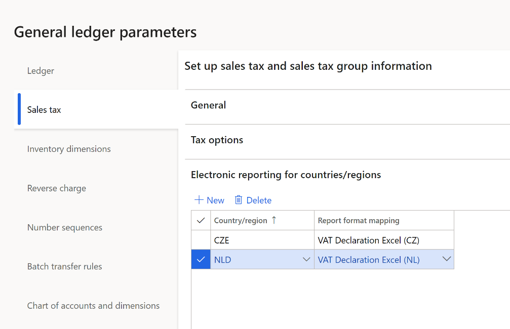
Note
You can select an ER format if the ISO Country/region codes field on the ISO Country/region codes FastTab is blank in this format.
In the 10.0.19 release, a format for the Netherlands is available for preview. For more information, see VAT declaration for Netherlands topic.
The following table shows the earliest ER format versions, that you can select the format for.
Release Country ER format 10.0.19 All Tax declaration model.version.85
Tax declaration model mapping.version.85.13810.0.19 NL VAT Declaration XML (NL).version.85.14
VAT Declaration Excel (NL).version.85.14.17
Generate a VAT declaration for multiple VAT registrations
Go to Tax > Declarations > Sales tax > Report sales tax for settlement period.
In the Report sales tax for settlement period dialog box, in the Settlement period field, select a settlement period.
In the From date field, specify the first date to generate the VAT declaration for.
In the Sales tax payment version field, select one of the following values:
- Original: Generate a report for sales tax transactions of the original sales tax payment or before the sales tax payment is generated.
- Corrections: Generate a report for sales tax transactions of all subsequent sales tax payments for the period.
- Total list: Generate a report for all sales tax transactions for the period, including the original and all corrections.
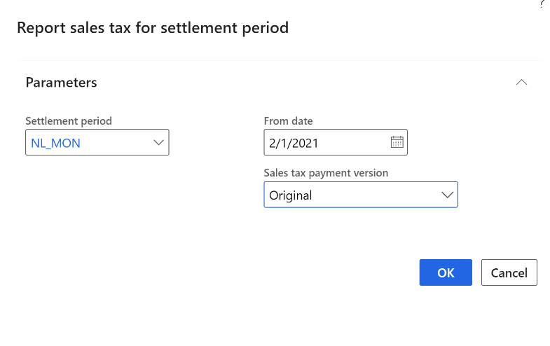
Select OK to generate the report.